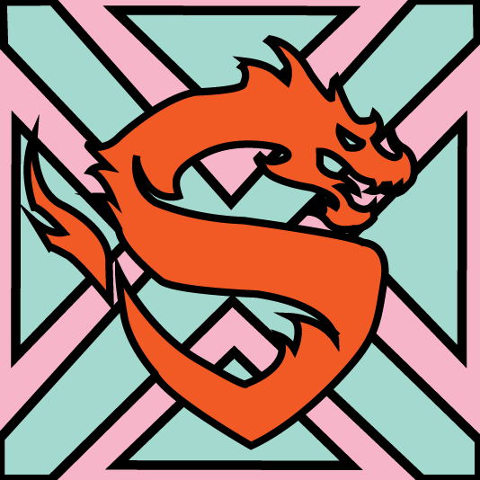
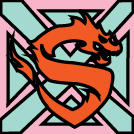
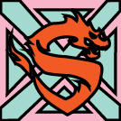
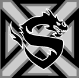
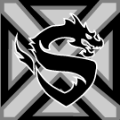
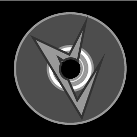

August 28, 2018
Project 1: Avatar

The project was to design an avatar the was in an isographic position. The avatar is modeled after myself, wearing sunglasses, my dyed hair color, boots. The other aspect was to include an object of something we enjoy, so I decided to include a video game controller.
September 25, 2018
Project 2: Website Icon
Drawing


The first set of icons I did was for drawing. Drawing is one of the things I enjoy to do most in my free time and felt it was a big factor in what makes me, me. I wanted to draw something that interested me so I used one of the ideas that I couldn't fit into an icon, fantasy. I handdrew out a fairy in my notebook then copied the image over to illustrator. After this I used the pen tool to get the shape and make adjustments that were needed. I wanted to pull up the image a bit so I added a thin black stroke, and then used a light background that fit in the theme.
Video Games

 


 

The second set of icons I did was for video games. I wanted to showcase one my favorite things about video games, watching good people play. I like to think that my friends and I are good, but then I watch the professionals play and I am in awe. To capture these teams I look the main aspects from two of my favorite team's logos. I used the blue crosses from New York Excell, and the Dragon from the Shanghai Dragons one. I combined those aspects together and layered them in a way that would be visually pleasing. Next I matched it with the drawing icon and added a background and some light stroking.
Friends




The final set of icons I did was for my friends. I wanted to showcase activities my friends and I do together. One of the first things I thought of was movies so I started witb the DVD base. Next I created a few icons from some of our favorite movies. I ended up choosing the one for the movie Iron Sky which is a Finish movie about alien Nazis who live on the moon, since this is one of our favorites. I layered the design on top of the DVD then cut the whole out through both of the designs. Finally, I added a stroke and a background to match the other two.